Cтекло Parsol тонированное в массе от 4 до 10мм различной цветовой гаммы:Бронза,
серое,
зелёное, голубое;
Cтекло Satin от 4 до 10мм , бесцветное, бронза, серое, синее;
Cтекло узорчатое, стекло прокатное, производства Германии, Польши в широком
ассортименте.
Обработка стеклозеркальных изделий для производства изделий и стекла в интерьере:
Шлифовку- полировку кромки прямую и фигурную;
Фасет кромки от 0,5 до 50мм прямой и фигурный;
Матирование стекла художественное и сплошное (песком, корундом);
Сверление отверстий от 4м до 500 мм;
Витражная роспись стекла;
Художественный витраж Тифани;
Покрытие стекла безопасной, тонировочной плёнкой;
Изготовление триплекса;
Каление;
Изготовление художественных стеклофасадов;
Кухонные фартуки из стекла/ зеркала.
Изделия из стекла в интерьере комплектуются высококачественной фурнитурой:
Полкодержателями;
Крепежами;
Светодиодными и галогеновыми подсветками;
Профилем;
Комплектацией для столов;
Стекло для кухонных фартуков с рисунком и без.
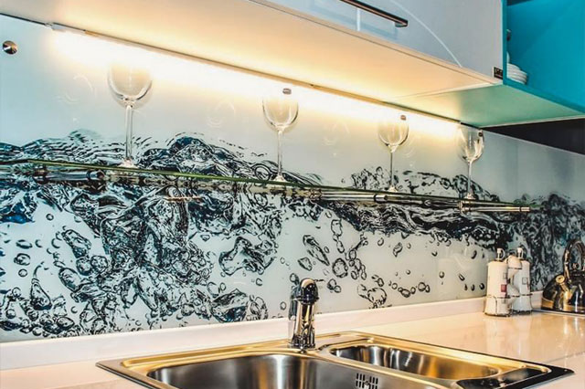
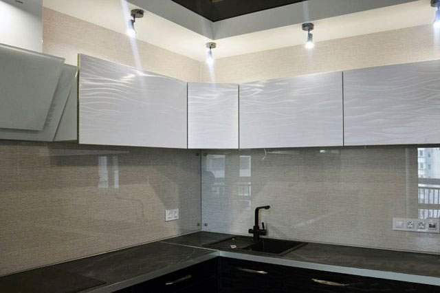
Каленое стекло для душевых кабин, под заказ.
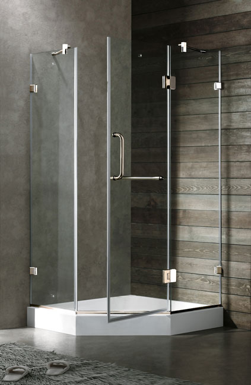
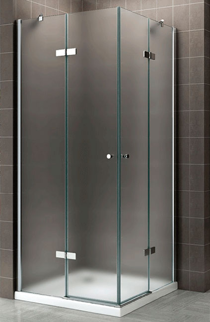
Профессиональный и качесественный ремонт точной обработки стекла, шлифовки и полировки.
Зеркала
От 2мм - 6 мм. на основе серебра, а так же тонированные:
Серебро, Бронза, Графит;
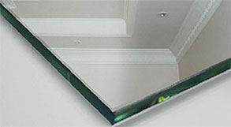
Серебра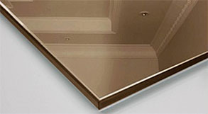
Бронза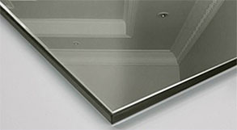
Графит
Выполняются индивидуальные заказы, любых размеров и любых форм.
Авто-Мото Зеркала
Изготавливаем и заменяем полусферические зеркала на любые автомобили и мотоциклы.
Без ограничений в течении часа!
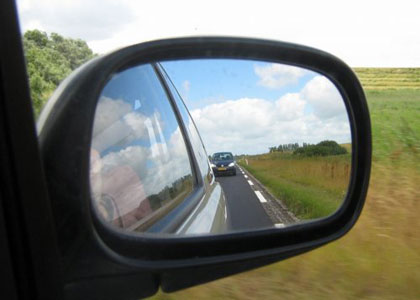
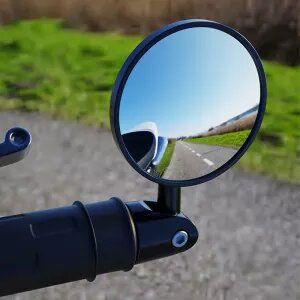
А так же изготавливаем подогревы на авто-зеркала и мото-зеркала.
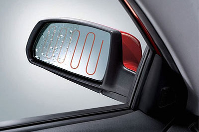
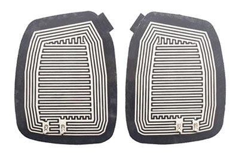
Резка стеклянных бутылок
Изготовляем вертикальную и горизонтальную резку стеклянных бутылок.
Профессиональный и качесественный ремонт точной обработки стекла, шлифовки и полировки.
Удаление сколов на кромках бокалов, ваз и графинов.
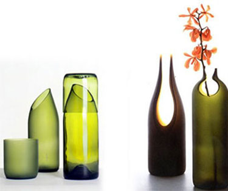
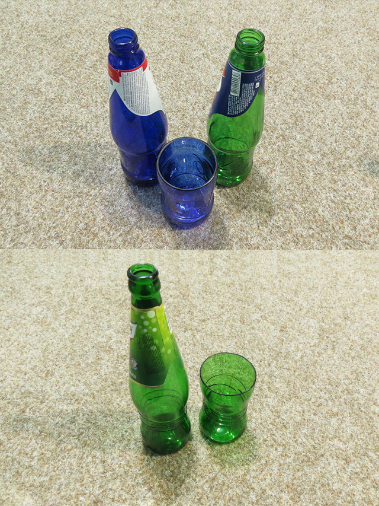
Заточка керамических ножей
Заточка керамических ножей любой сложности, сколы, зазубрины, отбитый кончик.
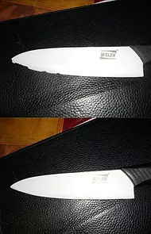
Удаление сколов на кромках бокалов, ваз и графинов.